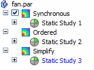

Using a simplified model
To get the best results from Solid Edge Simulation, you can simplify the geometry in your part, sheet metal, and assembly models. There are several ways you can do this.
Use a simplified part or sheet metal model
You can create studies using synchronous (1), ordered (2), and simplified (3) models. These model states are defined in the Tools tab→Model group.
To eliminate errors during meshing, you can use the simplified form of the model.

Each model state created in PathFinder has its own entry in the Simulation pane. The currently active model state determines where a new study is created.

Simplify assembly models
To speed meshing times in an assembly model, you can use the simplified representation of part and sheet metal geometry in a study. You can:
-
Mix designed and simplified parts within the same study.
-
Use the simplified body of an occurrence in one study and the designed body in another.
-
Select a simplified body, or select the mid-surface, faces, edges, or vertices from a simplified body.
-
Change the geometry state within an existing study, without affecting other studies.
When you activate a study, the associated model geometry displays the appropriate designed and simplified states of the parts.
Simplified assemblies are created outside of Solid Edge Simulation using the Tools tab→Simplify group→Create Simplified Assembly command.
How do I
Override mesh propertiesLearn more
Assembly best practices for simulationSpecifying material properties accurately
Offsetting edges around holes, openings, and fasteners
Removing geometry flaws and small entities
Optimizing study results
Simulation materials and properties
Mesh material properties